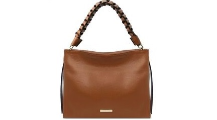
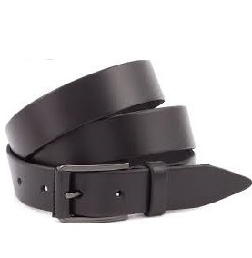
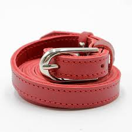
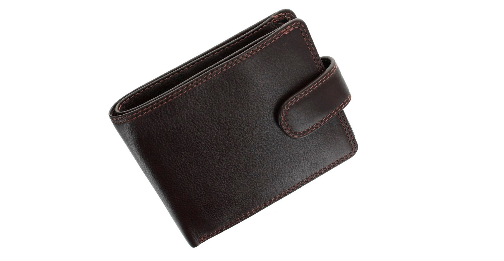

-

Шкіряна сумка ручної роботи
Шкіряна сумка ручної роботи є унікальним витвором мистецтва, створеним з урахуванням найвищих стандартів якості та естетики. Кожен елемент цієї сумки ретельно опрацьований вручну, що надає їй ексклюзивності й робить її справжнім символом стилю та витонченості. Основним матеріалом для виготовлення сумки є натуральна шкіра вищої якості, яка відрізняється міцністю, довговічністю і стійкістю до зношування. Цей матеріал не тільки забезпечує надійність аксесуара, але й надає йому унікального вигляду з часом. З кожним роком використання шкіряна поверхня набуває характерної патини — природного блиску й текстури, що робить кожен виріб неповторним.
-
 
Класичні шкіряні ремені
Класичні ремені — це не просто аксесуар, а незамінний елемент гардеробу, що додає завершеності будь-якому образу. Виготовлений із високоякісної натуральної шкіри, цей ремінь відрізняється витонченою простотою та елегантністю, що робить його універсальним вибором для різних стилів — від офіційного до повсякденного. Натуральна шкіра преміум-класу забезпечує не тільки естетичну привабливість, але й довговічність. З часом матеріал стає м'якшим і комфортнішим, зберігаючи свій оригінальний вигляд. Поверхня ременя поступово набуває благородної патини, що підкреслює індивідуальність і характер кожного виробу.
-

Шкіряний гаманець ручної роботи
Шкіряний гаманець ручної роботи — це витончений аксесуар, який поєднує в собі високу функціональність і естетичну досконалість. Виготовлений з натуральної шкіри найвищої якості, цей гаманець стане надійним супутником для повсякденного використання, додаючи вашому образу елегантності та статусності.Головною особливістю гаманця є його ручне виготовлення, яке гарантує увагу до кожної деталі. Майстри використовують традиційні техніки обробки шкіри, що передаються з покоління в покоління, створюючи продукт, який не тільки практичний, але й справді унікальний. Кожен шов виконаний вручну з високою точністю, що забезпечує не тільки міцність виробу, але й естетичну завершеність.